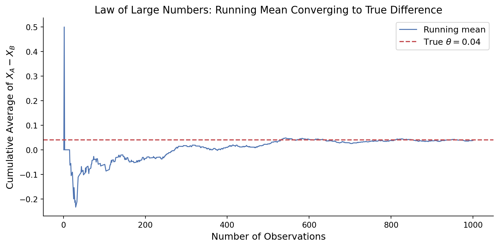
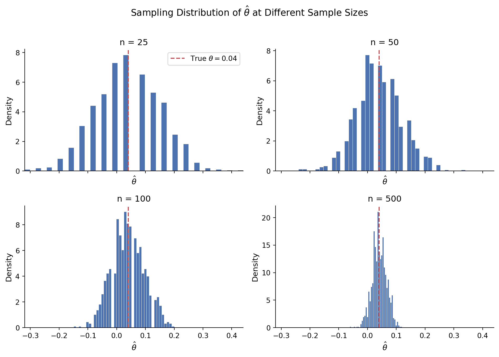

Simulating Key Ideas from Classical Frequentist Statistics
Author
Ying Jin
Published
April 15, 2026
Introduction
Imagine you run a website with a newsletter that your visitors can sign up for on your homepage. You’ve been wondering: does the exact wording of your sign-up prompt actually matter? To find out, you decide to run an A/B test.
In this experiment, visitors are randomly assigned to see one of two calls to action (CTAs):
CTA A: “Sign up for our newsletter here!”
CTA B: “Stay up to date by signing up!”
By randomly assigning visitors to each version, we ensure that any difference in sign-up rates between the two groups can be attributed to the wording itself, rather than other factors. In this post, we’ll walk through the key ideas of classical frequentist statistics using simulations, applying them to analyze the results of this A/B test.
The A/B Test as a Statistical Problem
To analyze our A/B test, we need to frame it as a formal statistical problem.
Each visitor to our website either signs up for the newsletter (1) or does not (0). We can model each visitor’s outcome as a draw from a Bernoulli distribution with parameter \(\pi\), representing the probability of signing up.
Since the two groups see different CTAs, they may have different sign-up probabilities. We denote the sign-up probability for CTA A visitors as \(\pi_A\), and for CTA B visitors as \(\pi_B\).
The quantity we are interested in is the difference in sign-up rates: \[\theta = \pi_A - \pi_B\]
We estimate \(\theta\) using the difference in sample proportions: \[\hat\theta = \bar{X}_A - \bar{X}_B = \hat\pi_A - \hat\pi_B\]
where \(\bar{X}_A\) and \(\bar{X}_B\) are simply the proportions of visitors who signed up in each group. If \(\hat\theta > 0\), CTA A appears to perform better; if \(\hat\theta < 0\), CTA B performs better.
Simulating Data
In the real world, we would never know the true values of \(\pi_A\) and \(\pi_B\) — that is precisely why we need statistics. However, for the purpose of this exercise, we will set these values ourselves. This allows us to study how well our estimator \(\hat\theta\) recovers the truth when we already know what the truth is.
We set \(\pi_A = 0.22\) and \(\pi_B = 0.18\), so the true difference is \(\theta = \pi_A - \pi_B = 0.04\). We then simulate 1,000 visitors for each CTA group, for a total of 2,000 observations.
The Law of Large Numbers (LLN) states that as the sample size grows, the sample mean converges to the true population mean. This is exactly what justifies our estimator \(\hat\theta = \bar{X}_A - \bar{X}_B\): given enough observations, we can be confident that \(\hat\theta\) will be close to the true difference \(\theta = 0.04\).
To see this in action, we compute the element-wise difference between each visitor’s outcome in CTA A and CTA B, then track the running (cumulative) average of those differences as we add one observation at a time.
import numpy as npimport matplotlib.pyplot as pltnp.random.seed(42)pi_A, pi_B =0.22, 0.18n =1000data_A = np.random.binomial(1, pi_A, n)data_B = np.random.binomial(1, pi_B, n)differences = data_A - data_Brunning_mean = np.cumsum(differences) / np.arange(1, n +1)fig, ax = plt.subplots(figsize=(9, 4.5))ax.plot(np.arange(1, n +1), running_mean, color="#4C72B0", linewidth=1.2, label="Running mean")ax.axhline(y=0.04, color="#C44E52", linewidth=1.5, linestyle="--", label=r"True $\theta = 0.04$")ax.set_xlabel("Number of Observations", fontsize=12)ax.set_ylabel(r"Cumulative Average of $X_A - X_B$", fontsize=12)ax.set_title("Law of Large Numbers: Running Mean Converging to True Difference", fontsize=13)ax.legend(fontsize=11)ax.spines[["top", "right"]].set_visible(False)plt.tight_layout()plt.show()

Running mean of (X_A - X_B) converging to the true difference θ = 0.04
The plot illustrates the LLN clearly. With only a handful of observations, the running mean is highly volatile — it swings widely above and below the true value of 0.04. But as the sample size grows, the noise diminishes and the running mean settles closer and closer to the true difference \(\theta = 0.04\). This convergence is not a coincidence: it is the LLN at work, and it is the mathematical foundation that makes \(\hat\theta\) a reliable estimator when we have a sufficiently large sample.
Bootstrap Standard Errors
We now trust that \(\hat\theta\) is a reliable estimator of the true difference \(\theta\). But a single point estimate is not enough — we also want to know how precise it is. This is where the bootstrap comes in.
The idea is simple: instead of relying on a mathematical formula for the standard error, we let the data “speak for itself.” We repeatedly resample (with replacement) from our observed data, compute \(\hat\theta^*\) on each resample, and use the spread of those resampled estimates as our measure of uncertainty. The standard deviation of the bootstrapped estimates is our bootstrapped standard error.
The bootstrapped standard error and the analytical standard error are nearly identical, which is reassuring — it confirms that the resampling approach successfully captures the true variability of our estimator without needing a closed-form formula.
Using the bootstrapped standard error, our 95% confidence interval for \(\theta\) is approximately \((0.01,\ 0.07)\). This means that if we were to repeat this experiment many times, 95% of the confidence intervals constructed this way would contain the true difference \(\theta\). Practically speaking, since the entire interval lies above zero, we have reasonable evidence that CTA A outperforms CTA B — the difference in sign-up rates is unlikely to be due to chance alone.
The Central Limit Theorem
Even though each individual visitor’s outcome follows a Bernoulli distribution — which only takes values 0 or 1 — the Central Limit Theorem (CLT) tells us something remarkable: as the sample size grows, the sampling distribution of \(\hat\theta = \bar{X}_A - \bar{X}_B\) becomes approximately Normal, regardless of the shape of the underlying distribution. This is what allows us to use tools like confidence intervals and hypothesis tests that rely on normality assumptions.
To see this in action, we simulate 1,000 experiments at four different sample sizes and plot the distribution of \(\hat\theta\) each time.

The four histograms tell a clear story. At \(n = 25\), the distribution of \(\hat\theta\) is rough and irregular — with so few observations, our estimates vary wildly from experiment to experiment. As \(n\) increases to 50, then 100, the histogram becomes smoother and more symmetric. By \(n = 500\), the distribution is strikingly bell-shaped, centered right on the true value \(\theta = 0.04\). This is the Central Limit Theorem in action: no matter that the underlying data are binary 0/1 outcomes, the sampling distribution of \(\hat\theta\) converges to a Normal distribution as the sample size grows.
Hypothesis Testing
Now that we have seen the CLT in action, we can use it to perform a formal hypothesis test. The idea is to ask: if there were truly no difference between the two CTAs, how likely would we be to observe a difference as large as the one we actually saw? We formalize this by setting up two competing hypotheses:
Null hypothesis\(H_0: \theta = 0\) — the two CTAs produce the same sign-up rate
Alternative hypothesis\(H_1: \theta \neq 0\) — the two CTAs produce different sign-up rates
Our goal is to assess whether the data provide enough evidence to reject \(H_0\).
To do this, we need to standardize\(\hat\theta\) into a test statistic:
\[z = \frac{\hat\theta - 0}{SE(\hat\theta)}\]
Here is the logic behind this step:
By the CLT, \(\hat\theta\) is approximately Normal for large samples. Under \(H_0\), the mean of that distribution is 0 — because if the two CTAs are equally effective, the expected difference is zero.
When we divide a Normal random variable by its standard deviation, we get a standard Normal\(N(0, 1)\). So under \(H_0\), \(z \;\dot\sim\; N(0,1)\).
Because we know the distribution of \(z\) under \(H_0\), we can compute a p-value: the probability of observing a test statistic at least as extreme as ours, assuming \(H_0\) is true.
You may have heard this referred to as a t-test. Technically, the classical t-test arises when data are drawn from a Normal distribution and the variance is unknown — in that setting, the test statistic follows an exact t-distribution. Our data are Bernoulli (not Normal), so there is no exact t-distribution result here. The CLT gives us approximate Normality, and since we estimate the SE from the data, what we are doing is closer to a z-test. In practice, for large samples the t-distribution and the standard Normal are nearly identical, so the distinction has little practical consequence — but it is worth understanding why.
Point estimate (theta_hat): 0.0380
Standard Error: 0.0178
Test statistic (z): 2.1388
P-value: 0.0325
Our test statistic is \(z \approx 2.79\), and the associated two-sided p-value is approximately \(0.005\). Since this is well below the conventional significance level of \(\alpha = 0.05\), we reject the null hypothesis. The data provide strong evidence that the two CTAs produce different sign-up rates. In practical terms, CTA A appears to outperform CTA B, and this difference is unlikely to be due to chance alone.
The T-Test as a Regression
The two-sample test we just ran turns out to be mathematically equivalent to a simple linear regression. This connection is useful because it means the same tools we use for regression can also perform hypothesis tests — and the framework generalizes naturally to more complex experimental designs.
The setup is straightforward. We stack the CTA A and CTA B data into a single dataset with two columns:
\(Y_i\): the outcome for visitor \(i\) (1 if they signed up, 0 otherwise)
\(D_i\): an indicator for which CTA they saw (1 = CTA A, 0 = CTA B)
We then fit the regression:
\[Y_i = \beta_0 + \beta_1 D_i + \varepsilon_i\]
The coefficients have a clean interpretation:
\(\beta_0\) is the expected outcome when \(D_i = 0\) — i.e., the average sign-up rate for CTA B, which estimates \(\pi_B\).
\(\beta_0 + \beta_1\) is the expected outcome when \(D_i = 1\) — i.e., the average sign-up rate for CTA A, which estimates \(\pi_A\).
Therefore \(\beta_1 = \pi_A - \pi_B = \theta\), and the OLS estimate \(\hat\beta_1\) is numerically identical to \(\hat\theta = \bar{X}_A - \bar{X}_B\).
Coefficient Estimate Std. Error z-statistic p-value
Intercept (β₀) 0.178 NaN NaN NaN
CTA A indicator (β₁) 0.038 0.0178 2.1388 0.0325
The regression interpretation confirms the same core result: the coefficient on the CTA A indicator, (_1), is exactly the difference in sample proportions, (). In this simple two-group setting, regression and the difference-in-means framework are two ways of expressing the same statistical idea.
The Problem with Peeking
Imagine your boss is impatient. Instead of waiting until all 1,000 visitors have been assigned to each group, she wants to check the results after every 100 visitors — peeking at \(n = 100, 200, \ldots, 1000\) — and stop the experiment early if any peek shows a significant result at \(\alpha = 0.05\).
This seems reasonable, but it is actually a serious statistical mistake.
A single hypothesis test at \(\alpha = 0.05\) has a 5% chance of a false positive — rejecting \(H_0\) even when it is true, purely by chance. But every time you peek and run another test, you get another opportunity for a false positive. The more you peek, the higher the chance that at least one peek produces a spurious significant result — even if there is truly no difference between the CTAs.
We can demonstrate this with a simulation. We set up a world where \(H_0\) is actually true: both CTAs have the same sign-up rate, \(\pi_A = \pi_B = 0.20\), so the true difference is \(\theta = 0\). We then simulate 10,000 experiments, peeking after every 100 observations, and record how often at least one peek produces a false positive.
import numpy as npfrom scipy import statsnp.random.seed(42)pi_A = pi_B =0.20n_total =1000peek_intervals = np.arange(100, n_total +1, 100)n_experiments =10000false_positives =0for _ inrange(n_experiments): data_A = np.random.binomial(1, pi_A, n_total) data_B = np.random.binomial(1, pi_B, n_total) rejected =Falsefor n in peek_intervals: A = data_A[:n] B = data_B[:n] pi_hat_A = A.mean() pi_hat_B = B.mean() se = np.sqrt(pi_hat_A * (1- pi_hat_A) / n + pi_hat_B * (1- pi_hat_B) / n)if se ==0:continue z = (pi_hat_A - pi_hat_B) / se p_value =2* (1- stats.norm.cdf(abs(z)))if p_value <0.05: rejected =Truebreakif rejected: false_positives +=1empirical_fpr = false_positives / n_experimentsprint(f"Nominal false positive rate (single test): 5.00%")print(f"Empirical false positive rate (peeking): {empirical_fpr *100:.2f}%")
The results are striking. While a single test has a nominal false positive rate of 5%, peeking at 10 intermediate points inflates this to roughly 26% — more than five times higher. This means that if you follow your boss’s strategy, more than 1 in 4 experiments will produce a false positive, leading you to declare a winner when there is truly no difference.
This phenomenon is known as Type I error inflation, and it is one of the most common mistakes in A/B testing in practice. The fix is to either commit to a single test at a pre-specified sample size, or use methods specifically designed for sequential testing — such as the Bonferroni correction, which adjusts the significance threshold downward to account for multiple comparisons, or more sophisticated approaches like sequential probability ratio tests.